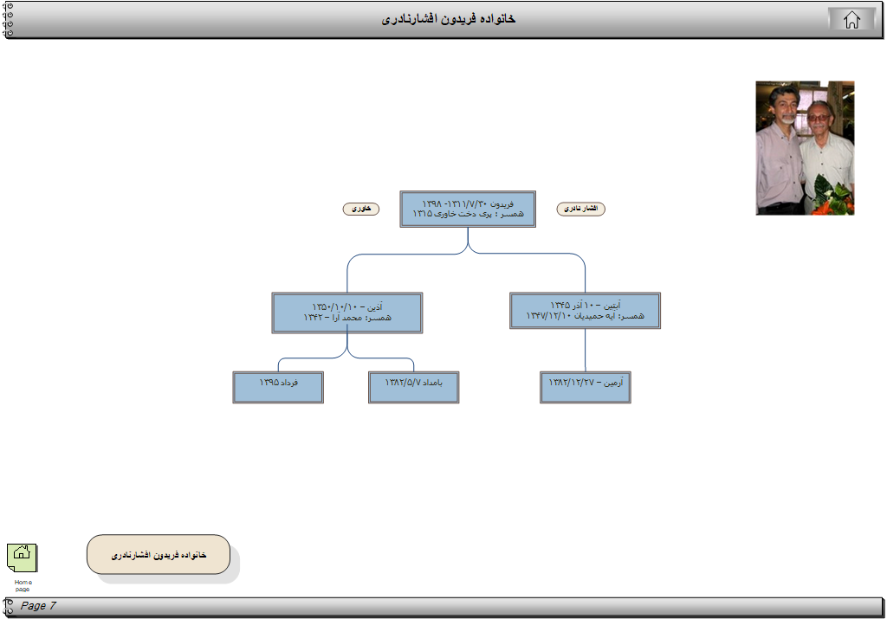

بازیابی از آرشیو اولیه
shajareh9911
منبع ثبت اولیه: وبسایت افشار نادری · این صفحه برای حفظ محتوای تاریخی به سایت جدید منتقل شده است.

منبع ثبت اولیه: وبسایت افشار نادری · این صفحه برای حفظ محتوای تاریخی به سایت جدید منتقل شده است.